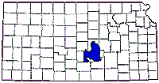

The Equus Beds is an aquifer situated in the south central portion of Kansas, laying under the counties of Harvey, Marion, McPherson, Rice, Reno, and Sedgwick.

It is the eastern-most part of the high plains aquifer system. It has excellent quality water located at relatively shallow depths with good saturation depth (ranging from 50 to 250 feet). It is an important source of water for irrigation, industry, and municipal and private drinking water systems. The cities of Hutchinson, McPherson, Newton, and Wichita all obtain drinking water from the equus beds.
The items shown in this site fall into several categories, including sites with confirmed groundwater or soil contamination and potential contamination sources like solid waste facilities, water treatment plants, and feedlots.
The Equus Beds Google Map Project is Copyright © 2005 by Walt Eis. Mapping software is the Google Maps API, XMaps, and custom programming by the author.
Initial data from the Equus Information Resource site, reformatted into XML and corrected when needed.
County boundary data from U.S. Census Bureau Tiger/Line files
Well data from Kansas Geological Survey
Kansas Map with Equus Beds outline is from the Equus Information Resource site.